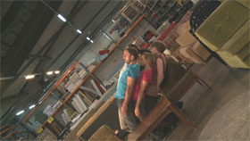

set in motion

Willi Dorner, Michael Palm – Austria 2012 – 20 min.
DOP: Johannes Hammel, Eugen Pell, E: Michael Palm – P: Johanes Hammel – V: Sixpackfilm
With Lisa Oettinghaus, Anna Reitbauer, Esther Steinkogler, Werner Nigg u.a. – Choreography: Willi Dorner
HD – no dialogues
„set in motion“ is a humorous, grotesque cinematic chain reaction which choreographs the varied relationships between the human body and furniture. In various tableaux vivants a furniture store is converted into a site of unleashed kinetics. Seven performers adapt to chairs, tables, sofas etc. Whilst the tension between stasis and movement grows, actions on their part trigger reactions on the side of the material, and this, in turn, triggers a chain-reaction which blurs the boundaries between bodies and things. – Crossing Europe
Sunday 12/10. 11.00 p.m. Theatiner Filmkunst
Willi Dorner, born in 1959. Choreographer, curator and video artist.
Michael Palm, born in 1965 in Austria. Filmmaker, Cutter, composer and sound designer. Film studies und studies of philosophy and film & theater science in Vienna. Since 1988 he has been making films. In 1991 he co-founded the publishing house PVS Verleger. Member of Synema, society for film studies.
Films (Michael Palm, selection): Sea, Concrete, Human - Malfunctions # 1 2001 – Edgar G. Ulmer - The Man Off-screen 2004 – Body Trail 2008 – "Low Definition Control" 2011